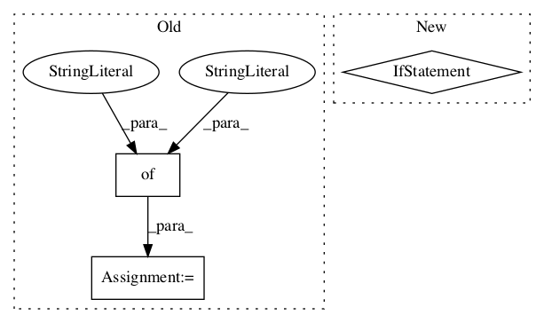

81a34e895e1e657b8c41b631594cfcfda99f250d,basenji/seqnn.py,SeqNN,set_params,#SeqNN#Any#,478

Before Change
if self.batch_renorm:
RMAX_decay = ops.adjust_max(6000, 60000, 1, 3, name="RMAXDECAY")
DMAX_decay = ops.adjust_max(6000, 60000, 0, 5, name="DMAXDECAY")
self.renorm_clipping = {
"rmin": 1. / RMAX_decay,
"rmax": RMAX_decay,
"dmax": DMAX_decay
}
else:
self.renorm_clipping = {}
def train_epoch(self,
After Change
// other
//////////////////////////////////////////////////////////////////////////////////////////////////////
self.save_reprs = job.get("save_reprs", False)
self.renorm_clipping = layers.renorm_clipping() if self.batch_renorm else {}
def train_epoch(self,
sess,
batcher,
In pattern: SUPERPATTERN
Frequency: 4
Non-data size: 3
Instances
Project Name: calico/basenji
Commit Name: 81a34e895e1e657b8c41b631594cfcfda99f250d
Time:
Author: null
File Name: basenji/seqnn.py
Class Name: SeqNN
Method Name: set_params
Project Name: calico/basenji
Commit Name: 7ff7ed2cf2d3d9cab8b944d4194f6a3b180deaab
Time:
Author: null
File Name: basenji/augmentation.py
Class Name:
Method Name: augment_deterministic
Project Name: tensorflow/transform
Commit Name: 08c0e994cc0e20cb576469c01b472a43e3279e86
Time:
Author: null
File Name: tensorflow_transform/beam/tft_beam_io/transform_fn_io_test.py
Class Name:
Method Name:
Project Name: tensorflow/transform
Commit Name: 08c0e994cc0e20cb576469c01b472a43e3279e86
Time:
Author: null
File Name: tensorflow_transform/beam/tft_beam_io/beam_metadata_io_test.py
Class Name:
Method Name: